第 12 章
数学形态学
本章共 9 个小节 · 腐蚀 · 膨胀 · 开/闭运算 · 梯度 · 礼帽/黑帽 · 核函数
数学形态学常用于二值图像和灰度图像的结构处理。它通过结构元素，也就是内核，改变白色前景区域的大小、连接关系或轮廓。
本章先讲腐蚀和膨胀，再用 morphologyEx() 组合出开运算、闭运算、形态学梯度、礼帽和黑帽等操作，最后说明建立结构元素的核函数。
12-1
腐蚀 Erosion
腐蚀会让白色前景区域缩小。以二值图像为例，当结构元素覆盖在影像上时，只有内核覆盖区域都满足前景条件，中心位置才保留为白色；
否则会被腐蚀成黑色。因此腐蚀可以消除小白点、断开细连接线，也会让物体边界向内收缩。
dst = cv2.erode(src, kernel, anchor, iterations, borderType, borderValue)
| 参数 | 说明 |
|---|
src | 来源影像，常见为二值图。 |
kernel | 结构元素，可用 Numpy 阵列或 getStructuringElement() 产生。 |
anchor | 锚点位置，默认 (-1, -1) 表示内核中心。 |
iterations | 执行次数，默认 1；次数越多，腐蚀越明显。 |
程序实例 ch12_1.py：用 3x3 内核理解腐蚀操作
# ch12_1.py
import cv2
import numpy as np
src = np.zeros((7, 7), np.uint8)
src[1:6, 1:6] = 1
kernel = np.ones((3, 3), np.uint8)
dst = cv2.erode(src, kernel)
print(f"src =\n{src}")
print(f"kernel =\n{kernel}")
print(f"erosion =\n{dst}")
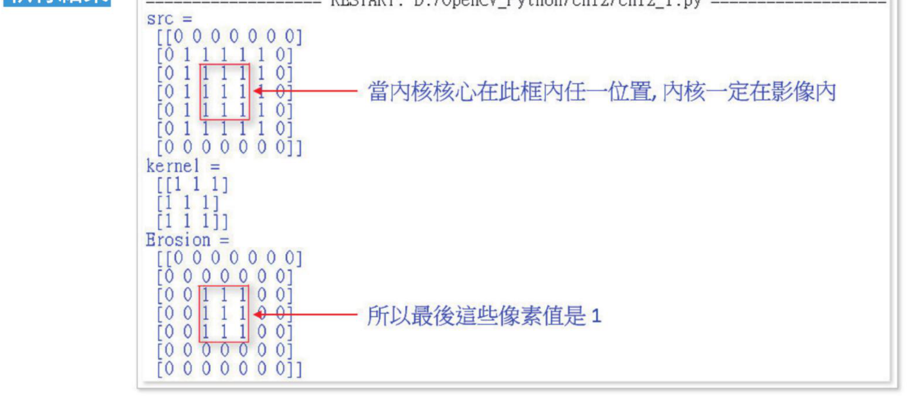
3x3 内核必须完整落在前景内，中心点才保留为 1，参考原书第 12-4 页。
程序实例 ch12_2.py：使用不同大小内核腐蚀二值图
# ch12_2.py
import cv2
import numpy as np
src = cv2.imread("bw.jpg")
kernel5 = np.ones((5, 5), np.uint8)
kernel11 = np.ones((11, 11), np.uint8)
dst1 = cv2.erode(src, kernel5)
dst2 = cv2.erode(src, kernel11)
cv2.imshow("src", src)
cv2.imshow("after erosion 5 x 5", dst1)
cv2.imshow("after erosion 11 x 11", dst2)
cv2.waitKey(0)
cv2.destroyAllWindows()
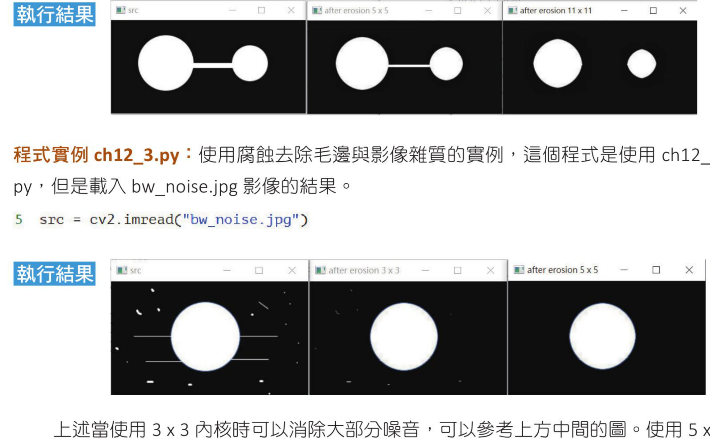
内核越大，白色前景缩得越明显；带噪声图也可用腐蚀去除小白点，参考原书第 12-5 页。
程序实例 ch12_3.py 与 ch12_4.py：腐蚀去噪和彩色图腐蚀
ch12_3.py 将腐蚀用于带噪声的二值图，观察小白点被移除；ch12_4.py 把同样观念用在彩色影像上，
可以看到暗色区域扩大、亮色区域缩小。
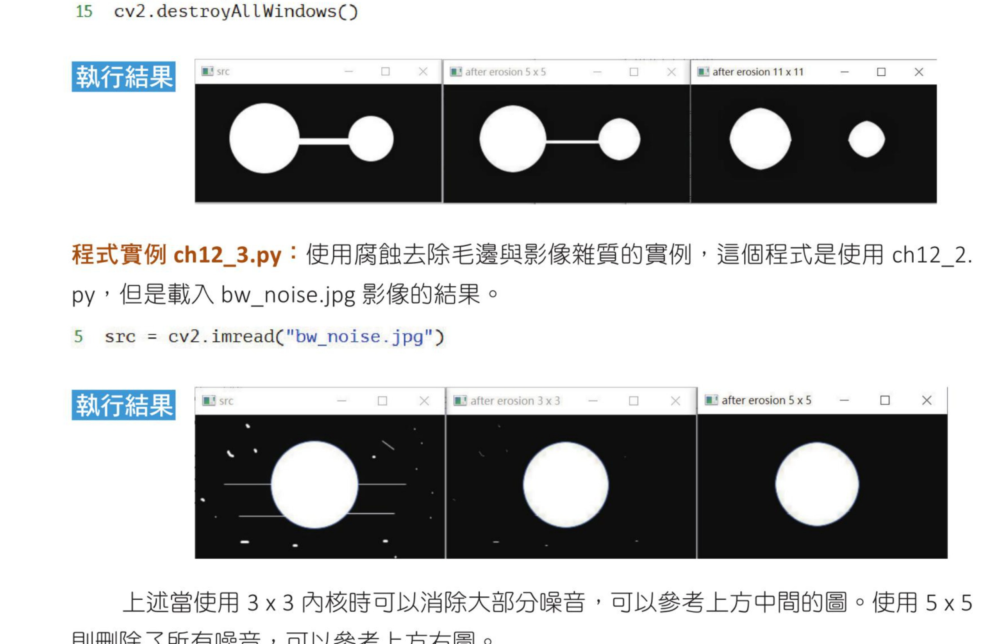
腐蚀可去除部分小型白色噪声，参考原书第 12-5 页。
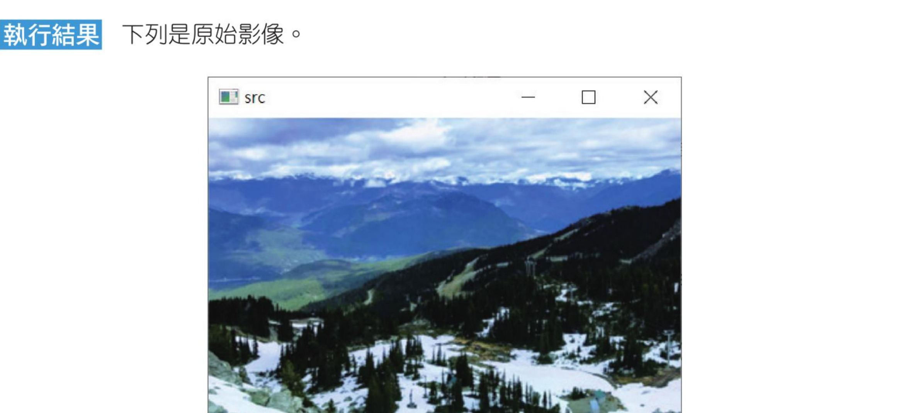
彩色影像执行腐蚀后的比较，参考原书第 12-6 页。
12-2
膨胀 Dilation
膨胀和腐蚀相反，会让白色前景区域扩大。只要结构元素覆盖范围内存在前景，中心位置就可能被设置为白色。
膨胀可以补强断裂线条、扩大亮区，常和腐蚀搭配使用。
dst = cv2.dilate(src, kernel, anchor, iterations, borderType, borderValue)
程序实例 ch12_5.py：用 3x3 内核理解膨胀操作
# ch12_5.py
import cv2
import numpy as np
src = np.zeros((7, 7), np.uint8)
src[2:5, 2:5] = 1
kernel = np.ones((3, 3), np.uint8)
dst = cv2.dilate(src, kernel)
print(f"src =\n{src}")
print(f"kernel =\n{kernel}")
print(f"Dilation =\n{dst}")
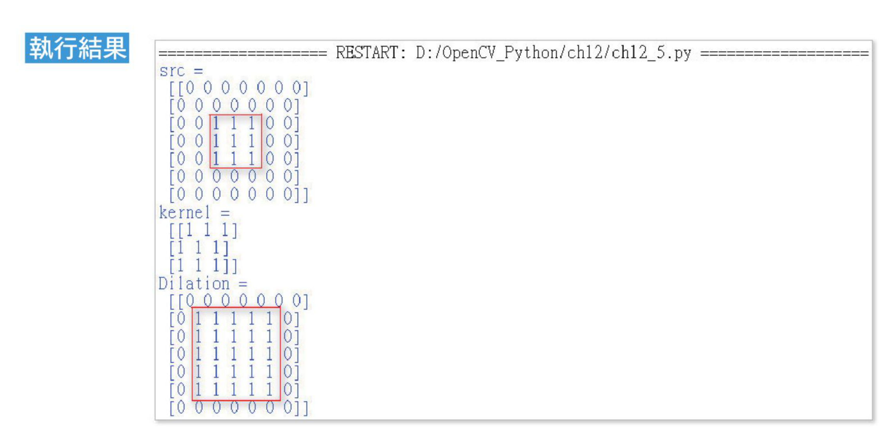
膨胀会让前景向外扩张，参考原书第 12-9 页。
程序实例 ch12_6.py：使用不同大小内核膨胀二值图
# ch12_6.py
import cv2
import numpy as np
src = cv2.imread("bw_dilate.jpg")
kernel5 = np.ones((5, 5), np.uint8)
kernel11 = np.ones((11, 11), np.uint8)
dst1 = cv2.dilate(src, kernel5)
dst2 = cv2.dilate(src, kernel11)
cv2.imshow("src", src)
cv2.imshow("after dilation 5 x 5", dst1)
cv2.imshow("after dilation 11 x 11", dst2)
cv2.waitKey(0)
cv2.destroyAllWindows()
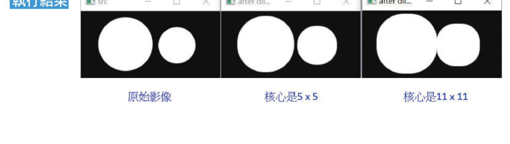
内核越大，白色区域扩张越明显，参考原书第 12-9 页。
程序实例 ch12_7.py 与 ch12_8.py：字母图和彩色图膨胀
ch12_7.py 使用字母图观察 3x3 与 5x5 膨胀核的差异；ch12_8.py 把彩色影像的腐蚀程序改写为膨胀程序，
可看到亮色区域扩张。
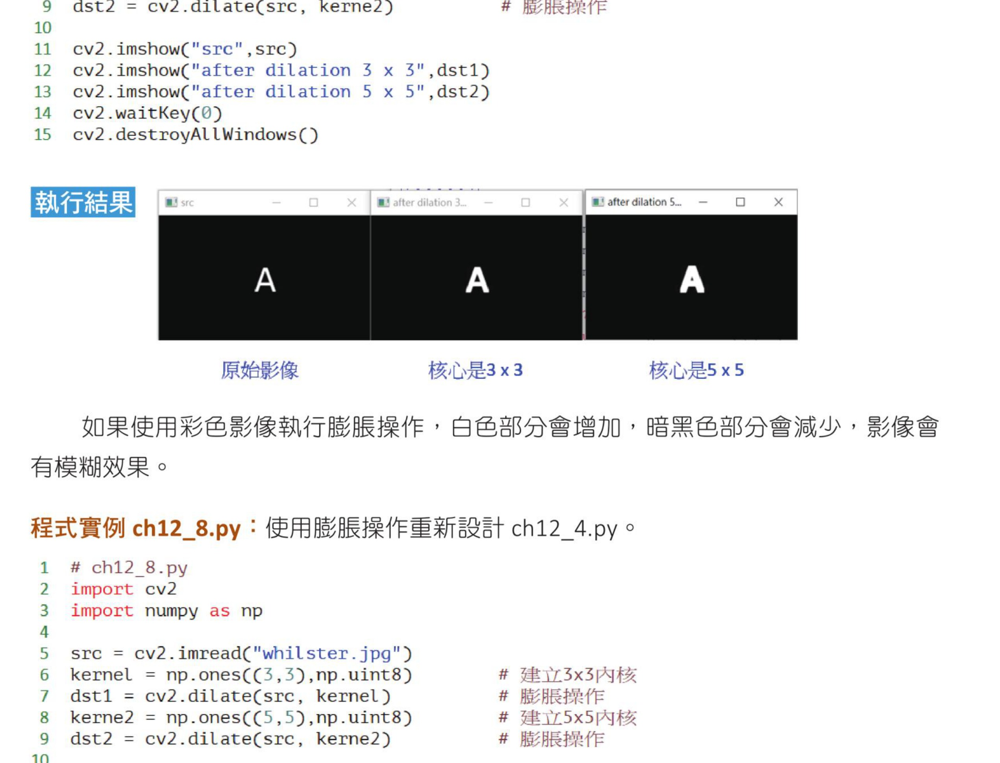
字母 A 使用不同内核膨胀后的结果，参考原书第 12-10 页。
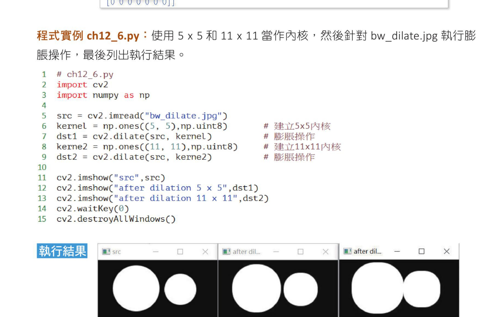
二值图膨胀对比，参考原书第 12-9 页。
12-3
OpenCV 应用在数学形态学的通用函数
腐蚀和膨胀是基础运算。OpenCV 也提供 morphologyEx()，用同一个函数执行开运算、闭运算、形态学梯度、顶帽、黑帽等复合操作。
结构元素可用 getStructuringElement() 建立，并指定矩形、十字形或椭圆形。
dst = cv2.morphologyEx(src, op, kernel, anchor, iterations, borderType, borderValue)
op 常数 | 作用 |
|---|
cv2.MORPH_OPEN | 开运算：先腐蚀再膨胀。 |
cv2.MORPH_CLOSE | 闭运算：先膨胀再腐蚀。 |
cv2.MORPH_GRADIENT | 形态学梯度：膨胀图减腐蚀图，用来取得边界。 |
cv2.MORPH_TOPHAT | 顶帽：原图减开运算结果。 |
cv2.MORPH_BLACKHAT | 黑帽：闭运算结果减原图。 |
kernel = cv2.getStructuringElement(shape, ksize, anchor)
shape | 结构元素 |
|---|
cv2.MORPH_RECT | 矩形内核。 |
cv2.MORPH_CROSS | 十字形内核。 |
cv2.MORPH_ELLIPSE | 椭圆形内核。 |
12-4
开运算 Opening
开运算等于先腐蚀再膨胀。它常用于删除小型白色噪声、断开细连接，同时尽量保留较大的主体区域。
对二值树状图，开运算可以去掉细线连接；对彩色图，效果会表现为局部细节被平滑或移除。
程序实例 ch12_9.py：用开运算处理二值树状图
# ch12_9.py
import cv2
import numpy as np
src = cv2.imread("tree.jpg")
kernel = np.ones((3, 3), np.uint8)
dst = cv2.morphologyEx(src, cv2.MORPH_OPEN, kernel)
cv2.imshow("src", src)
cv2.imshow("after Opening 3 x 3", dst)
cv2.waitKey(0)
cv2.destroyAllWindows()
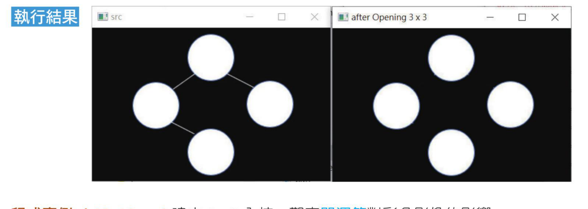
开运算会先腐蚀细连接，再通过膨胀恢复主体大小，参考原书第 12-13 页。
程序实例 ch12_10.py：用开运算处理彩色夜景图
# ch12_10.py
import cv2
import numpy as np
src = cv2.imread("night.jpg")
kernel = np.ones((9, 9), np.uint8)
dst = cv2.morphologyEx(src, cv2.MORPH_OPEN, kernel)
cv2.imshow("src", src)
cv2.imshow("after Opening 9 x 9", dst)
cv2.waitKey(0)
cv2.destroyAllWindows()
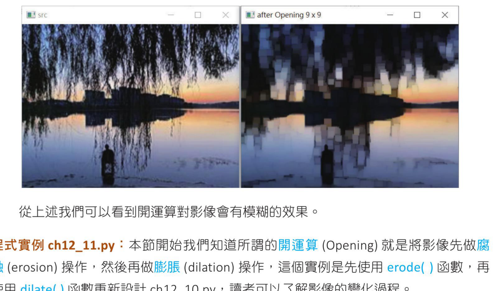
彩色图也可做形态学处理，效果取决于内核大小和影像内容，参考原书第 12-14 页。
程序实例 ch12_11.py：手动执行开运算流程
书中还把开运算拆成 erode() 后接 dilate()，用来验证 MORPH_OPEN 的实际流程。
12-5
闭运算 Closing
闭运算等于先膨胀再腐蚀。它常用于填补白色区域中的小黑洞、连接相近的白色区域，适合修补前景对象中的断裂或空洞。
程序实例 ch12_13.py：用闭运算修补图形
# ch12_13.py
import cv2
import numpy as np
src = cv2.imread("snowman1.jpg")
kernel = np.ones((10, 10), np.uint8)
dst = cv2.morphologyEx(src, cv2.MORPH_CLOSE, kernel)
cv2.imshow("src", src)
cv2.imshow("after Closing", dst)
cv2.waitKey(0)
cv2.destroyAllWindows()
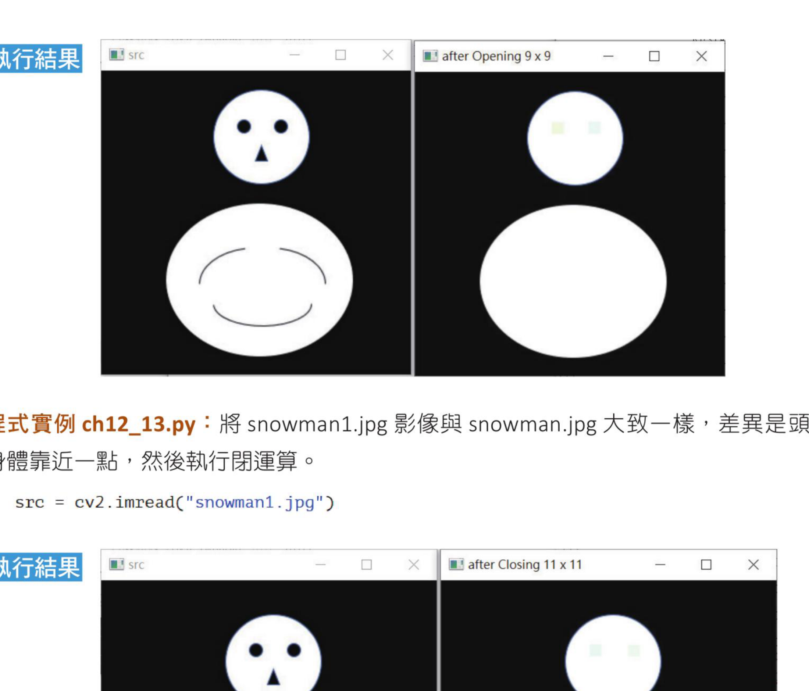
闭运算可以填补内部孔洞或连接近距离区域，参考原书第 12-16 页。
程序实例 ch12_12.py 与 ch12_14.py：闭运算对照与手动流程
ch12_12.py 使用雪人图示范闭运算填补空洞；ch12_14.py 则用先 dilate() 后 erode() 的方式验证闭运算。
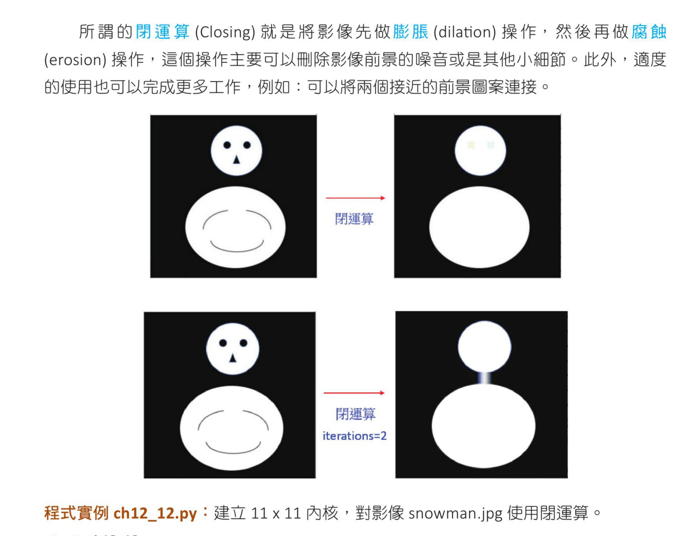
闭运算可修补白色主体内部的黑色空洞，参考原书第 12-16 页。
12-6
形态学梯度 Morphological Gradient
形态学梯度是膨胀结果减去腐蚀结果，能突出对象边界。它不像 Canny 那样完整执行多阶段边缘检测，
而是直接用形态学方式取得前景外扩和内缩之间的差异。
dst = cv2.morphologyEx(src, cv2.MORPH_GRADIENT, kernel)
程序实例 ch12_16.py：用形态学梯度抽出边界
# ch12_16.py
import cv2
import numpy as np
src = cv2.imread("hole.jpg")
kernel = np.ones((3, 3), np.uint8)
dst = cv2.morphologyEx(src, cv2.MORPH_GRADIENT, kernel)
cv2.imshow("src", src)
cv2.imshow("morphological gradient", dst)
cv2.waitKey(0)
cv2.destroyAllWindows()
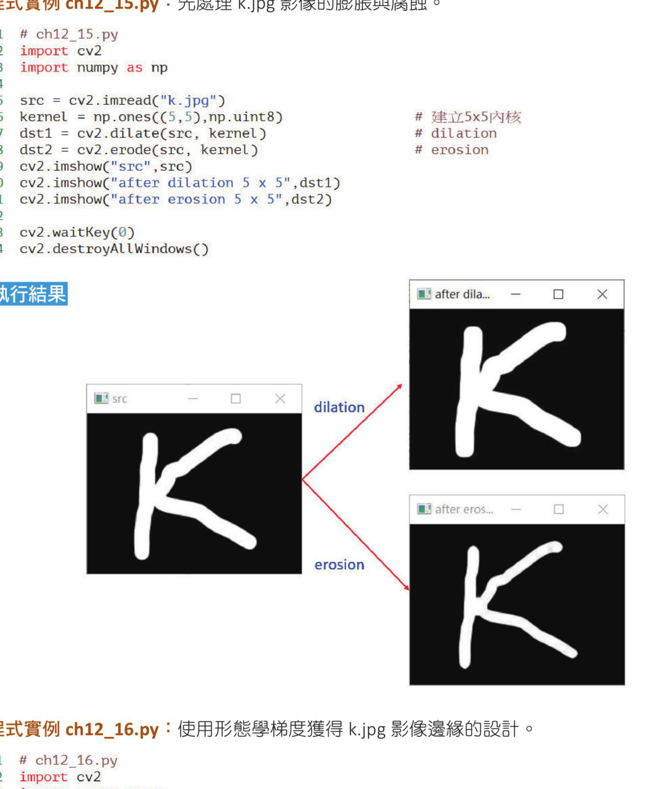
形态学梯度可抽出白色对象的外缘，参考原书第 12-18 页。
程序实例 ch12_15.py 与 ch12_17.py：字母与城市图形态学梯度
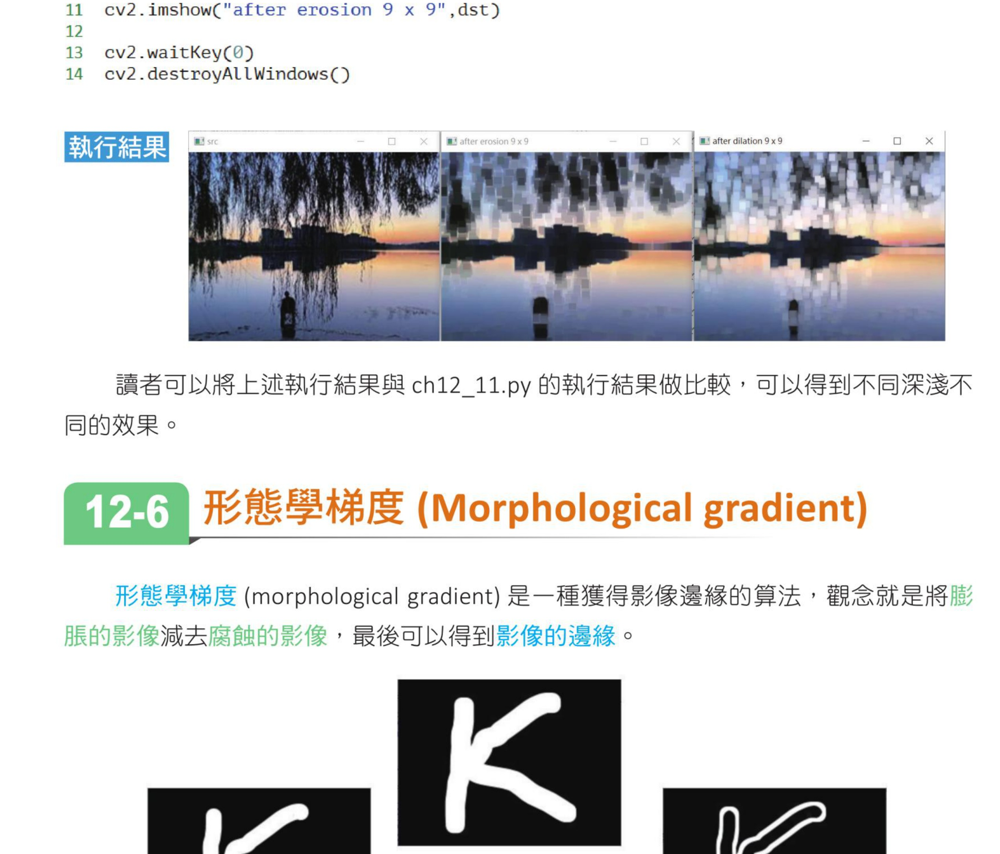
字母图形的形态学梯度结果，参考原书第 12-18 页。
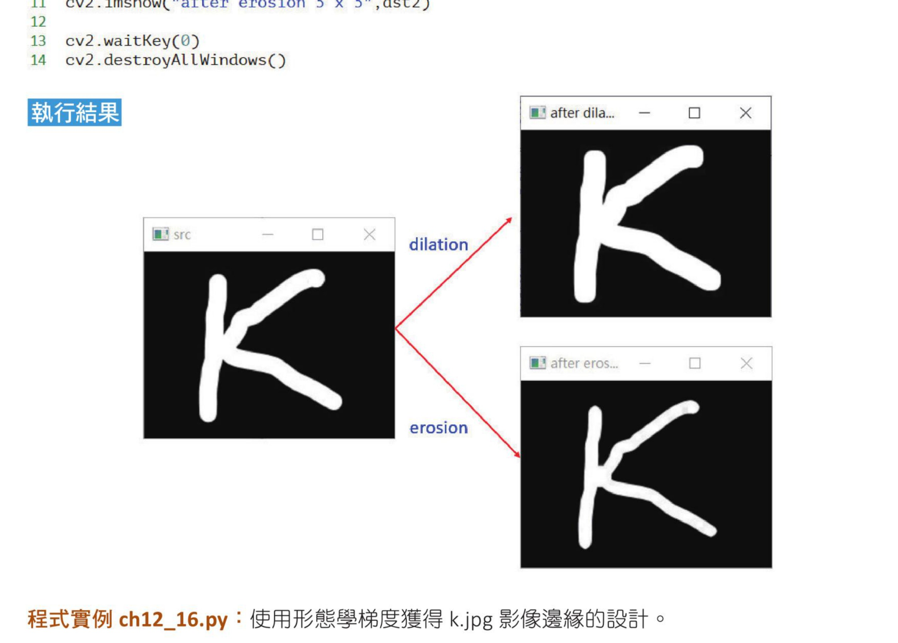
城市影像的形态学梯度结果，参考原书第 12-19 页。
12-7
顶帽运算 Tophat
顶帽运算是原始影像减去开运算结果，常用来提取比结构元素小、且比周围区域更亮的局部特征。
如果影像中存在细亮线或小亮点，顶帽运算可以把这些细节凸显出来。
dst = cv2.morphologyEx(src, cv2.MORPH_TOPHAT, kernel)
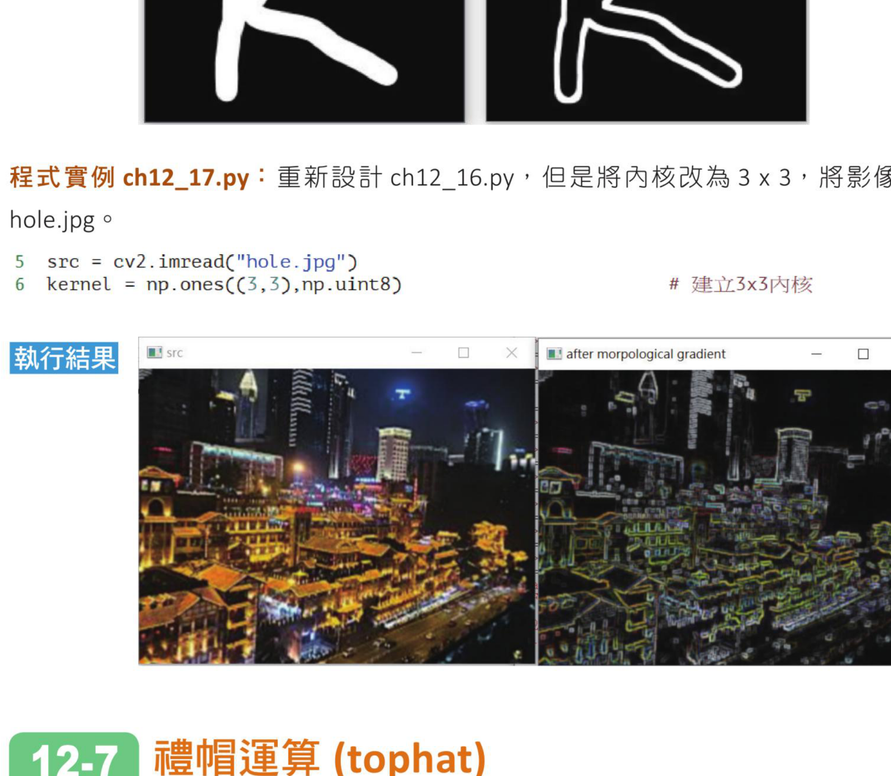
顶帽运算能保留被开运算移除的亮细节，参考原书第 12-19 页。
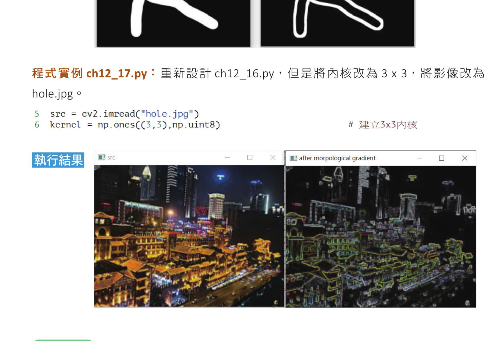
城市夜景图的礼帽运算结果，参考原书第 12-19 页。
12-8
黑帽运算 Blackhat
黑帽运算是闭运算结果减去原始影像，常用来提取比结构元素小、且比周围区域更暗的局部特征。
它和顶帽运算互补：顶帽找亮细节，黑帽找暗细节。
dst = cv2.morphologyEx(src, cv2.MORPH_BLACKHAT, kernel)
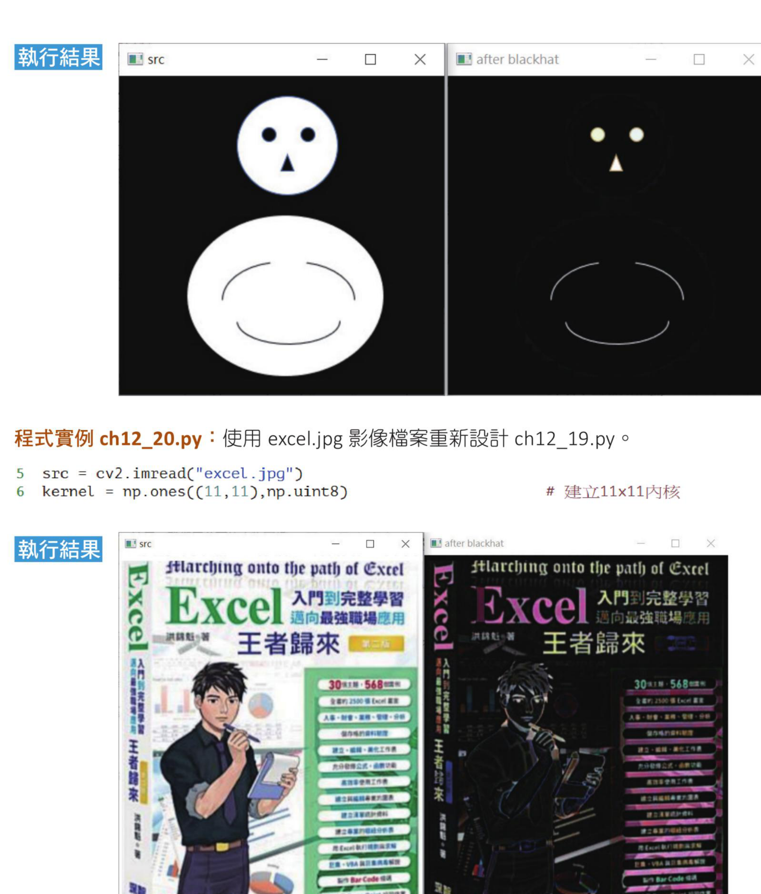
黑帽运算可凸显暗色局部结构，参考原书第 12-21 页。
程序实例 ch12_19.py 与 ch12_20.py：雪人与 Excel 图黑帽运算
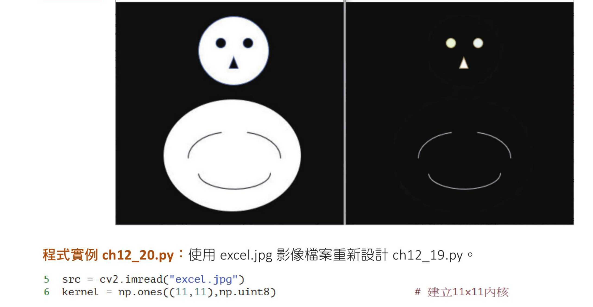
黑帽运算可提取主体内部或周围的暗色细节，参考原书第 12-21 页。
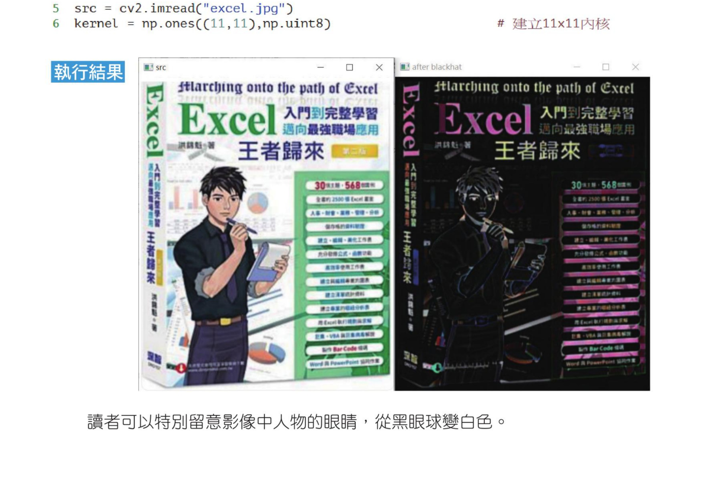
Excel 图黑帽运算对照，参考原书第 12-21 页。
12-9
核函数 getStructuringElement()
前面示例多用 np.ones() 建立矩形内核。OpenCV 还提供 getStructuringElement()，
可以直接建立矩形、椭圆形和十字形结构元素。不同形状的内核会让腐蚀、膨胀和复合形态学运算产生不同结果。
程序实例 ch12_21.py：建立不同形状的结构元素
# ch12_21.py
import cv2
kernel1 = cv2.getStructuringElement(cv2.MORPH_RECT, (3, 3))
kernel2 = cv2.getStructuringElement(cv2.MORPH_ELLIPSE, (3, 3))
kernel3 = cv2.getStructuringElement(cv2.MORPH_CROSS, (3, 3))
print("MORPH_RECT =\n", kernel1)
print("MORPH_ELLIPSE =\n", kernel2)
print("MORPH_CROSS =\n", kernel3)
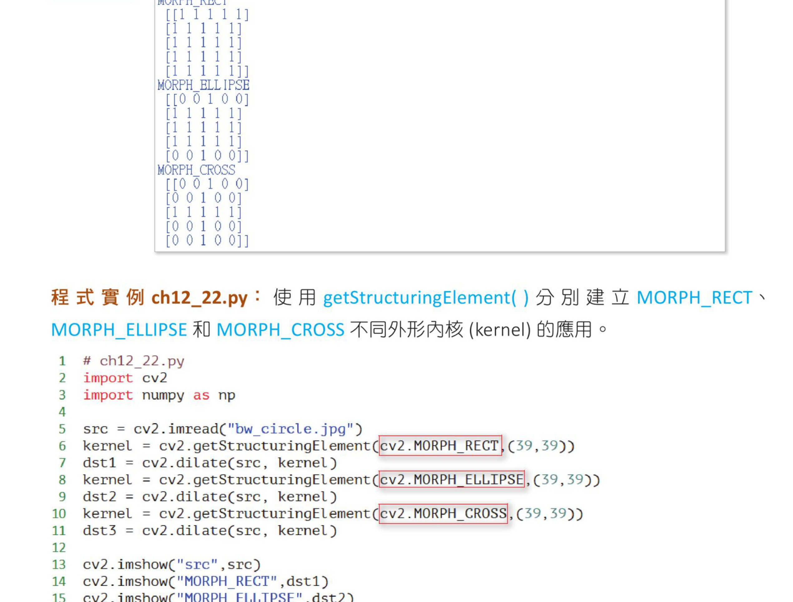
矩形、椭圆形与十字形结构元素的阵列结果，参考原书第 12-22 页。
程序实例 ch12_22.py：比较不同结构元素对图像的影响
# ch12_22.py
import cv2
src = cv2.imread("bw_circle.jpg")
kernel1 = cv2.getStructuringElement(cv2.MORPH_RECT, (11, 11))
kernel2 = cv2.getStructuringElement(cv2.MORPH_ELLIPSE, (11, 11))
kernel3 = cv2.getStructuringElement(cv2.MORPH_CROSS, (11, 11))
dst1 = cv2.erode(src, kernel1)
dst2 = cv2.erode(src, kernel2)
dst3 = cv2.erode(src, kernel3)
cv2.imshow("src", src)
cv2.imshow("MORPH_RECT", dst1)
cv2.imshow("MORPH_ELLIPSE", dst2)
cv2.imshow("MORPH_CROSS", dst3)
cv2.waitKey(0)
cv2.destroyAllWindows()
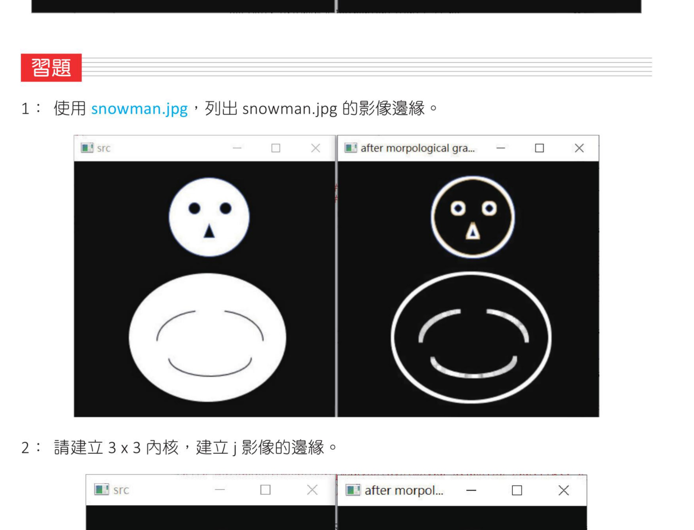
同一图像搭配不同结构元素，腐蚀后的形状会明显不同，参考原书第 12-23 页。
1. 使用 snowman.jpg，分别用椭圆形与十字形结构元素执行膨胀或腐蚀，并比较轮廓差异。
2. 对二值人脸或图形执行 MORPH_GRADIENT、MORPH_TOPHAT、MORPH_BLACKHAT，观察它们抽出的结构不同。
3. 修改 getStructuringElement() 的 shape 与 ksize，说明结构元素如何影响输出。
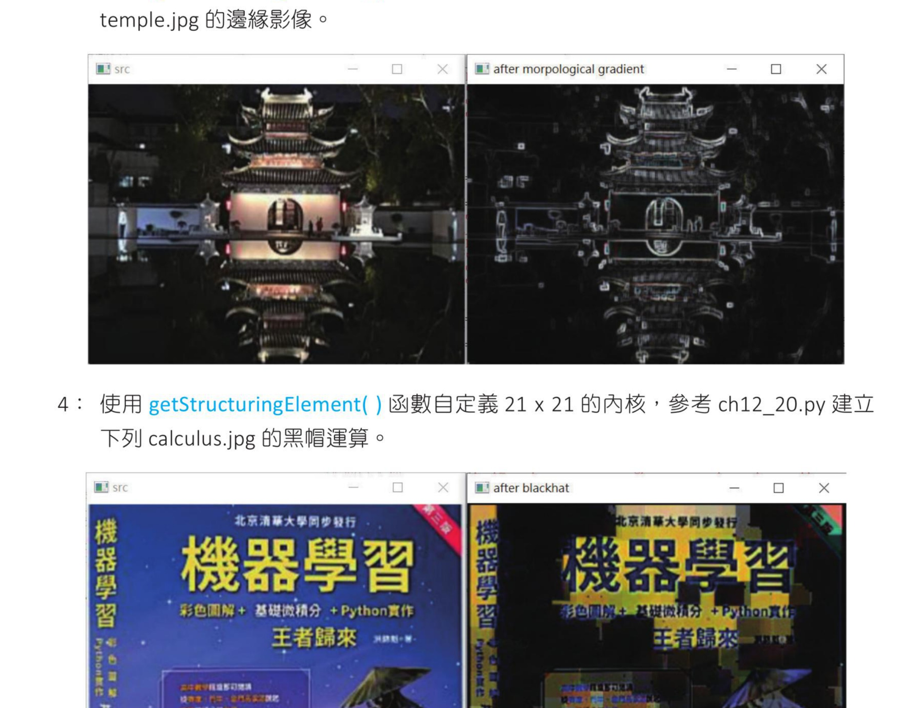
习题参考图一，参考原书第 12-24 页。
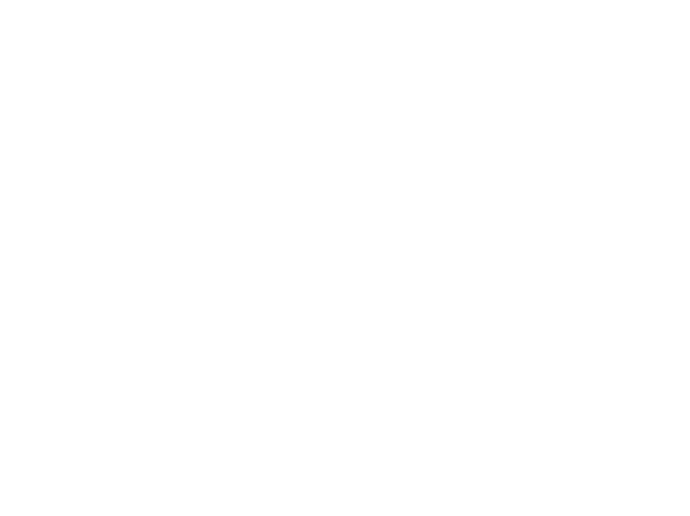
习题参考图二，参考原书第 12-25 页。